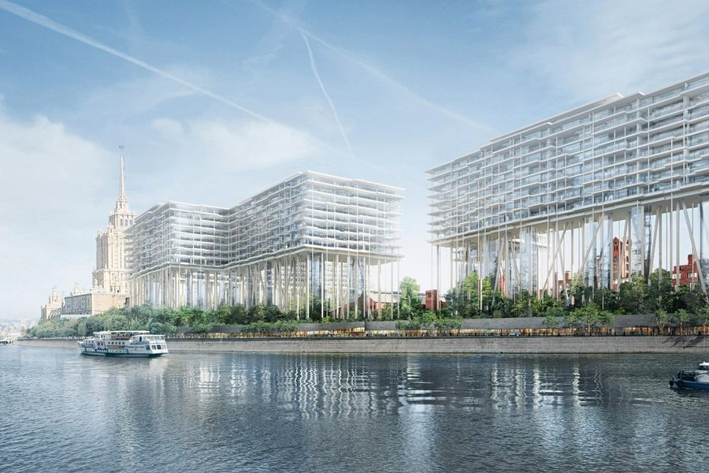

Продаёт застройщик Кутузовский у реки · Кутузовский пр-т, 12
Бадаевский
- Capital Group
- корпуса со сроками IV кв. 2026 – IV кв. 2027
- дома на колоннах высотой 35 м
- 871 квартира
- паркинг на 1 128 мест
- архитектура Herzog & de Meuron
| Формат | Площадь | Вход |
|---|---|---|
| 1-комн. | от 49,2 м² | от 77,2 млн ₽ |
| 2-комн. | от 46,6 м² | от 68,9 млн ₽ |
| 3-комн. | от 112,8 м² | от 159,9 млн ₽ |
| 4-комн. | от 175,7 м² | от 295,2 млн ₽ |
| 5 и больше | от 207,7 м² | от 463,5 млн ₽ |
Метр: 1,41–3,71 млн, медиана 1,53 млн. 154 лота у застройщика.
На заметку: 154 лота у Capital Group, вход — 46,6 м² за 68,9 млн. Медиана 1,53 млн за метр, а верх доходит до 3,71 млн: цену делают этаж и вид на реку. Дома на колоннах высотой 35 метров стоят над корпусами пивоварни 1875 года. По паспорту — без отметки: пять минусов, в том числе перенос сроков и 1,3 машиноместа на квартиру при норме премиума 1,5.